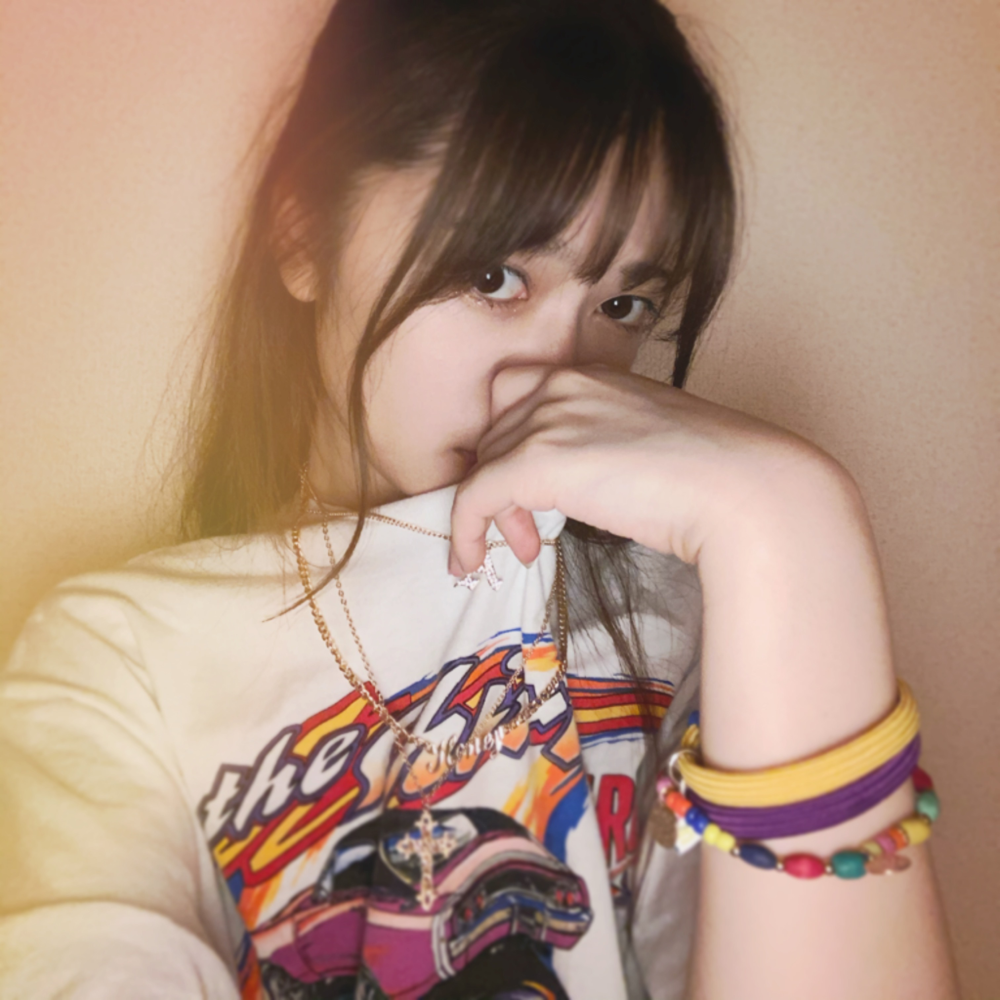
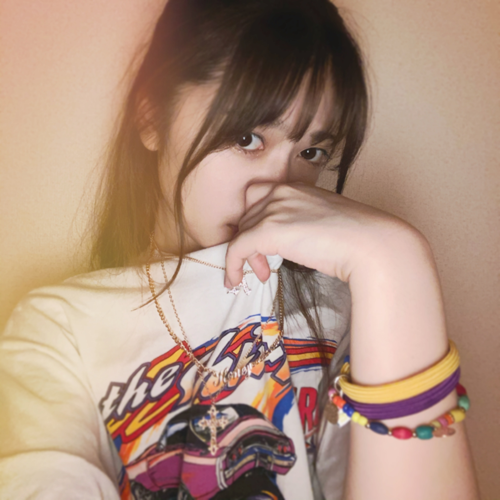
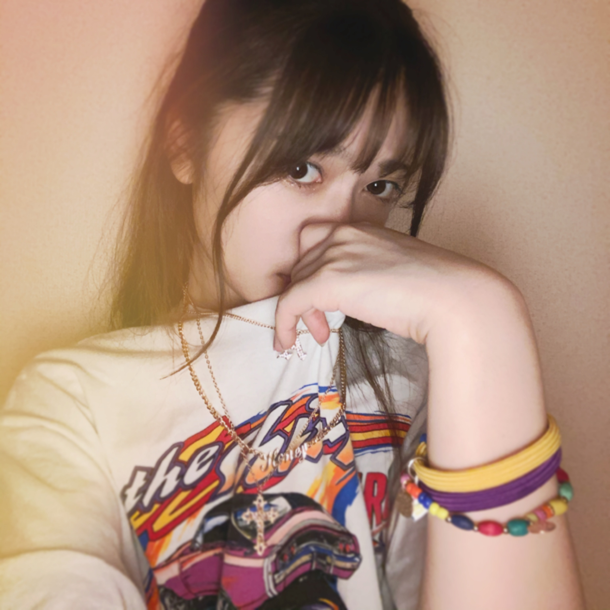

2020/0902Wed9月
おうちdeサンバカーニバル
タモリ倶楽部の企画
凄く好きな企画でした。！！
この自宅からサンバを踊っていただくと言う企画なのですが
女性の強さ美しさを感じました。！！
ショーやステージに居ると煌びやかで
程遠いいと思う美しさもあるけど
自宅という普段の美しさが見えるからこそ
より、生えるというか
とにかく、凄くパッション受けました。✨
本日
オールナイトニッポン宜しくお願い致します。
リモートでの生放送になります。
Showroom配信はありませんが
同じ時間を共有できる事を嬉しく思います。
是非、皆さんもお家時間のお供に
遅い時間ですが楽しく夜更かししましょう。☺️
 

私の本物レッスン着ですー。☺️
お納め下さい。☺️
タモリ倶楽部の企画
凄く好きな企画でした。！！
この自宅からサンバを踊っていただくと言う企画なのですが
女性の強さ美しさを感じました。！！
ショーやステージに居ると煌びやかで
程遠いいと思う美しさもあるけど
自宅という普段の美しさが見えるからこそ
より、生えるというか
とにかく、凄くパッション受けました。✨
本日
オールナイトニッポン宜しくお願い致します。
リモートでの生放送になります。
Showroom配信はありませんが
同じ時間を共有できる事を嬉しく思います。
是非、皆さんもお家時間のお供に
遅い時間ですが楽しく夜更かししましょう。☺️
私の本物レッスン着ですー。☺️
お納め下さい。☺️
2020/09/02 20:18


コメント(379)
最近とてもバタバタしてまして、なかなかコメント書けなくてーー(T_T)
でも毎回しっかり読んでますからねd(^_^o)
オールナイトニッポン聴いたよー！！
前回のゲストは5月だったよね？
結構早いタイミングでまたゲストで呼ばれて嬉しい限りです(^^)
寺田家エピソードが好きな僕的には、弟くんの話が面白かったです！
マニア気質な弟くん、可愛すぎますね！
今は信号機にハマってるってのも、なんだか微笑ましいですね(^^)
蘭世ちゃんの話す寺田家エピソードはハズレがなくて、どれも面白いので、これからも楽しみにしてますよー！！
それではまたコメントしますねー！
今回のブログのレッスン着の写真、おしゃれですごく好きです！
Tシャツのプリントとアクセサリーの色味の感じとか、
蘭世ちゃんの表情とか髪型とか、
おしゃれでいい写真だなーと！！
毎回写真も楽しみにしてるからねー^ ^
まだまだ暑いけど、9月を楽しく過ごせるように
健康に気をつけて頑張っていきましょー(^^)/
そしてそして、今日もモバメを、ありがとうございました！(^^)
元気出ましたーー♪o(^-^)o
この数日不覚にも体調を崩してしまってましまが、モバメパワーで完全復活です♪o(^-^)o
オールナイトニッポン、もちろんしっかり全部聴きましたよーー♪o(^-^)o
本当に楽しい時間でしたー♪(人´ω｀*).｡*ﾟ+.*.｡
さすがはお二人、ナイスコンビネーションで、終始素敵な空気感で、本当に楽しく拝聴させて頂きました♪(人´ω｀*).｡*ﾟ+.*.｡
素敵な時間がたっぷり長時間、本当に素敵な時間でした♪･:*:･(*´∀｀*)ｳｯﾄﾘ･:*:･
ブログの更新と素敵なお写真も、ありがとう♪(人´ω｀*).｡*ﾟ+.*.｡
すごくパワーと癒しを頂きました！！
いつも最高のパワーと癒しを、ありがとうございます！！
体調復活で、９月の盛り上がりにしっかりついてゆきますね♪
明日もファイトです♪
明日も素敵な1日になりますように♪o(^-^)o
やぁ
めーるありがとう
もう5日やなあっという間やで。
時は止まらず常に動いてるからな。
だからこそ毎日が大切なんだよな
9月は蘭世
何しおうかな～とりあえず今を大切に生きるかな。
蘭世
きっとまた後で(｡･ω･)ﾉﾞ
ほんとに時間が過ぎるの早くてびっくりしちゃいますね。
この前9月になったと思ったのに、、、気づいたら10月になっちゃいそう。
9月はまだ夏休みなので、自分の時間を有効に使いたいと思います◎
特に韓国語の勉強には力を入れたい！
いつか握手会の時に韓国語で会話してみたいな！
あと、9月といえば蘭世ちゃんのお誕生日！！！
沢山、気持ちを込めてお祝いしたいと思います☺️
蘭世ちゃんの9月はどんな感じになりそうですか？？
お疲れ様です。
9月をどう過ごしてますか？
自分も9月生まれなので、今月はいつも特別な感情を持って過ごすようになってます。
何故か1年の中で一番体調も良いですしね。
いろんな偶然？や縁が合わさって今自分が生きて暮らしている事を、その機会を与えてくれた両親に最大級の感謝をしつつ、これまでや今も自分に関わってくれた人達にもありがとうの気持ちを持って誕生日を迎える事にしています。
生きてるって、良くも悪くも人との関わり無しには有り得ない事だから。
蘭世もその中の1人ですからね。
そんな誰かを思い出す月にしています。
今日もありがとう
台風の影響には気をつけてください
またね
どんなジャンルの服装でも似合うって素敵ですね。そんな人になりたいですわ笑
有吉の夏休みで、こじはるさんが着てましたよー！寺田さんと一緒の服！！素敵だー2人とも
これからも素敵な発信心待ちにしてます！お身体に気をつけてください
(*・ｪ･*)ﾉ～☆ｺﾝﾊﾞﾝﾜ♪最愛なる蘭世
おかえり。今日も一日お疲れ様。
今日も夕方めっちゃ雨ゲリラ豪雨やで
でも早めに帰ってたから濡れなかった
最近ホンマゲリラ豪雨多いわ～。
しかも台風10号まで来よるし…
自然災害には語れへんからな
毎年どこかの川が氾濫してる感じがするわ。
復旧して元の生活に戻ってきたころにまた同じようになると心も被害を受けるもんな。
そういう災害がない事を願うわ。
自分達もしっかりと備えないとな
さてそろそろ寝ますかね。
蘭世
おやすみ蘭世
心熱くしてくれる蘭世
きっとまた明日も笑顔で(｡･ω･)ﾉﾞ
今日も一日お疲れ様です。
9月入ってからなんもしてなくもう5日経ってもーた。
とりあえずらんぜを含め9月生まれのメンバーをお祝いすることくらいです。
あとバッティングをしに行きます。
暑かったり涼しかったりで体調を壊しやすいと思うから気をつけて下さい。
明日も素敵な日になりますように。
またね(｡-ω-)
おやすみなさい
確かにもう５日もたったんだと思います。
年々１日１日が進むのが早く感じるので１日１日を大切にしていくようにしていきますね！
９月なにしますかね？
自分は英語の勉強をしようと思っています！
ずっと大好きですよ！
これからも応援していきます。
明日も一緒に生きような！
世界が平和でありますように〜
こんばんは！
本日もお疲れ様でした！
モバメありがとうです！
ほんまに早いですよね！
社会人になってから、時間がものすごく早く感じます！
しっかりと大切にしていきたいです！
明日も頑張りましょう！！(^-^)v
えいえいおー！！
誕生日まで残り18日！！
ぜーの勢い…
とまらんぜーーー！！！
No.668
ANNとっても嬉しかったです♪
お洋服も可愛いらしかったです！
らんらんのセンス大好きですよ✨
こじはるさんお揃い服も素敵でした！
自分のAKB1期生の推しメンでした☆
らんらんの坂道AKBも思い出深いです！
他グループとの交流もアリかもですね✴
ファッションの配信も観てみたいです！
お誕生月とっても期待しちゃってます✌
今月はスポットライト当たってますよ～☺
らんぜかわいい
9/5のメールのお返事です！
〇1通目
9/5ですねー！
もう6分の1終わっちゃいましたね。笑
歳を重ねるごとに時間の流れが早くなることを実感しております。
何しようかー？
蘭世さんの生誕祭は決まってるとして、他には何も決まってないなぁ。
シルバーウィークも何もしませんし！笑
まあぼちぼち決めていきますね：）
以上です！
蘭世さんから1日に1通でもメールが来たら嬉しいな！
いつも送ってくださりありがとうございます：）
いつでもお待ちしております。
明日は外で運動するからもう寝るねー！
おやすみ：）
悠人⊿
今日もメールを送ってくれて有難う！
9月に入ってからもう5日が経っていると思うと本当に驚きますねー
私だけ9月に入ってから毎日蘭世ちゃんのお誕生日になるまでSNSで蘭世ちゃんの好きなところを一つあげてカウントダウンしています。
小さなことかも知らないけど一人でも多くの人に蘭世ちゃんの良さが伝えたらたぁーと思います:)
蘭世ちゃんはSHOWROOMで個人配信をして見てはいかがでしょうか？
リモートだけど直接ファンと交流するいい場所だと思いますのでぜひご検討してくださいm(_ _)m
おはよう
って今日はもう日曜日！早い！！
一週間めちゃくちゃ早く感じる…
さて今日は何して過ごそうかな～
とりあえず朝ごはん食べて～それから考えよ笑
蘭世
やっぱ旅行とかかな？？
俺は何するだろう…多分～ずっと海外ドラマとか一気見してそう笑
そういえば昨日観てた『家に帰ると妻が必ず死んだふりをしています。』に『月が綺麗ですね』って言葉が出てきた
おお！これにその言葉が出てくるか！って思ったわ
その他にも人生には三つの坂がある『上り坂、下り坂、まさか』これは俺もおお～確かにって思った
映画ってさすごく良い言葉が結構あるよな
だからいろんなの観たくなる
さてそれじゃ今からご飯作りますか。
蘭世
今日も沢山笑って楽しめる一日を
今日も出会う方々や頂けるお仕事に感謝して初心を忘れずに楽しんで笑顔で居られる日にしよう。
産んで育ててくれた御両親にも常に感謝を…
じゃきっとまた後で(´▽｀)
いってらっしゃい！
もう6日だー！
早いね！
てか、6日なのにこの暑さは何？
こりゃ今年も秋短そうだね
9月はらんぜの誕生月だから
毎日ハッピーに過ごしたいよね
仕事忙しいけど
少しの時間でも楽しみたい
ポジティブに生きます！
らんぜは9月何するの？
では、今日も1日楽しんで生きましょうd(@^∇ﾟ)/ﾌｧｲﾄｯ♪
らんぜの誕生日は有休取ったんだー
ケーキ食べようね(o^^o)
らぶ♡
昨日は、メールありがとう！
早いね、、、９月ももう6日目だね。
タモリ倶楽部、楽しかったみたいだね(^^)♪
よかったです！
らんぜの書いたこと、すごく伝わってきましたョ(^^)
今回、掲載してくれたお写真からもそうですが、春先少しあとくらいからおうちから沢山の想いを届けてくれるらんぜに、私もらんぜのパッションを感じています。
ステージやテレビからでは伝わりきれないことかもしれません、それは。
そんならんぜが大好きだし、もっともっとらんぜが大好きになりました(^^)b
タモリ倶楽部、こちらでは少し週遅れだったような気がするから、もう少ししたらその回をこっちでも観られるかな♪
そして、今回らんぜが載せてくれたお写真。
イイですね〜！手首のミサンガ、ブレスレット、それらはあのお家時間のときにらんぜが作っていたアイテムたちですかね！？ジャラジャラ付けて、、、って言ってましたもんね(^^)
ネックレスもたくさん！素敵です♪
クロスともう1つのチャームが何か気になるところですね、、、ひとがたみたいにも見えるし、キャラクターかな？
Tシャツととっても合ってますね〜(^^)b
レッスン着、らんぜの本物のレッスン着かぁ！
貴重だなあ！！
アメ車だね(^^)お父さまが好きなアメ車ですね♪
絢音さんとのショールームでらんぜが言ってた通りのアメ車だ〜(^^)
らんぜ小さい頃こういうのに乗ってたんだね。
とってもオシャレなお写真たち。
特にさいごのらんぜの自撮りお写真は、効果がすごく効いてますね！オシャレ感が増してます(^^)すごくイイです。
今回も素敵なブログを、どうもありがとう！！
おとといくらいから、台風対策に追われてやっとらんぜにブログの感想を伝えることが出来ました、、、
もう、凄い凄い今度の、、、って言うから、もぅ準備だけで疲れ果てちゃった^^;
こんなパニック、大混乱になるのか〜、、、
なんか年々ひどくなるねぇ、今年はいったいなんなんだろう、、、
らんぜを想って心を安らげたいです。
ゆっくりと眠りたい^^;
そしたららんぜが夢に出てきてくれませんかにゃ、、、？
らんぜのお誕生までもう少しですね。
近づいてきます。台風よりも近づいてきます。
そちらは嬉しい(^^)♪
ではらんぜ、また書きますね。
も少し台風対策してきます。
ではでは、、、
9月はもう毎日蘭世へのお祝いの気持ちで過ごしてるよ(^^)
もう9月も６日、早いねー
でも着々と蘭世のお誕生日近づいてきてソワソワ(..)
こじはるさんのお洋服は握手会でも見たい
なんとかまた握手会開催されないかな？
そういえば蘭世はもう秋のお洋服は買ったかな？
昨日は晴れたと思ったらまた突然バケツをひっくり返したような雨になったりで大変だったよ(^^;
台風心配だね
10年、20年に一度クラスの災害が毎年当たり前のように起こるようになって大変だけど
油断せず常に備えたいね。
蘭世も気をつけて過ごしてね！
今日も１日頑張ろう☺️
コメント遅くなっちゃってごめん… ♀️
もう9月だね！！
私は誕生日が9月だから少し嬉しい♡♡
レッスン着！？凄い！(*ﾟДﾟ艸)
またコメントするね〜
わかより^^*
おつかれさまです♪
今日もそちらは暑かったのではないですか〜
まだまだ熱中症に気をつけないと、、、
水分も塩分も、9月も６日を過ぎたけどしっかりしっかり、摂っていきましょう(^^)！
今回のらんぜのブログのお写真。
ブログの内容にピッタリ、どこか南米の雰囲気、カラーがただよってますね♪
いそう。らんぜ南米にいそう！こんな美しくて可愛い、そして気丈な人がサンバの国にいたら、ステキですね(^^)
ワンピースのらんぜもとっても魅力的です。そして、アクティブなTシャツスタイルも大好きだな(^^)d
そういえば、たもりさんもなんべいが大好きだよね。昔、キューバ音楽とかについて楽しそうに話してたところを、よく覚えてます(^^)
らんぜもサンバとかタンゴとか、ボサノヴァとか好きかな？サングラスかけてトロピカルな飲み物でも飲みながら、ゆっくり聴いていたいね(^^)♪らんぜ似合いそうだよ！いえ、ぜったい似合うよ〜(^^)！
らんぜは晩ごはん、もう食べたかな〜？
今日私はものすごく久しぶりに、某レトルト食品のチキンハンバーグを食べたのです！
とっても懐かしかったあ！子供の頃依頼かな。
らんぜこの食べ物知ってるかな？
昔っからあるやつ(^^)
パッケージからほとんど変わってなくてビックリしちゃった^^;
らんぜも美味しいものを食べて、元気でいますように、、、
台風の準備してても、ずっとらんぜが気がかりで、想っていたからね、、、
今ようやくコメントたくさん書けるようになったよ〜(^^)b
また書きますね(^^)/〜
自粛期間は洋服も買いに行けないかぁ
ストレスが溜まってないか心配だなあ
モバメの自撮り相変わらず上手だね、素敵な写メありがとう
今日も1日お疲れさまです
お腹空かない日か
めっちゃ忙しくて食べるのも忘れる日とか
めっちゃ緊張してご飯どころじゃない日
あとは大好きな人と一緒にいて胸がキュンキュンしてる日かな
らんぜはどんな日だったのかな？
らんぜの世界観で撮影してほしいな
世界観で共鳴する人に撮影してもらえたら最高だよね
オレの世界は今のとこ誰とも共鳴してないわ…
では、明日も1日楽しんで生きましょうd(@^∇ﾟ)/ﾌｧｲﾄｯ♪
らんぜの個性すごく好きだよ
オレも個性を大事に生きていきたい
らぶ♡
やぁ
メ―ルありがとう！
今日はあまりお腹空かなかったんや。
あんまり動かなかったんかな？？
俺は夜にあるな今日はもう少しこしでいいかなって時
お菓子とか間食してないかぁ～？笑
今日もお疲れさま
ぴ～す！
お！ちょっと表情がついてきたな
全然おこがましくなんてないやろ。
そういうお仕事してるんやから！
虻川さんに撮って頂きたい！
あの世界観すごく好きやし蘭世
てかセルフで沢山撮ってくれてるもんな
場所も衣装もメイクもそして表情も全部が重なり合っていい写真が撮れそう
きっとまた後で(｡･ω･)ﾉﾞ
それがよく分かる番組でしたね。
ものすごいエナジーを感じました。
自分ができる状況と範囲の中で頑張れば道が開けると感じました。
やぁ
メ―ルありがとう！
それは良かったな
自撮りは苦手って言うてたけど、撮るにつれて色んな自分も発見できるだろうし、誰かに撮られる時と自分で撮る時の違いも勉強で切るだろうからね。
これも 良き経験。
何撮る～？
風景？花？人物？
また撮った物を良かったらブログに載せてな
メ―ルありがとう！
おお！今日はあやてぃーの誕生日か～おめでとう！
愛でたいな～(^^)
おおそっかまぁメンバーが増えればそれだけ増える事もあるな～
ってまだ血液不明なんか！
なんかあったらあかんから血液型も調べときや～。
きっとまた後で(｡･ω･)ﾉﾞ
コメントする